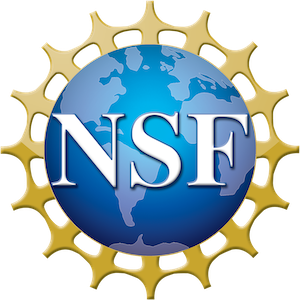

{{< /blocks/cover >}}
{{% blocks/lead color="primary" %}}
AMR-H is led by a team of computational physicists, engineers, and a team of computer scientists at Stanford University collaborating with academic institutes and industrial research facilities across the world.
This infrastructure can be used in scientific research, higher education, and engineering applications.
AMR-H is released under the [Apache-2.0 license](https://www.apache.org/licenses/LICENSE-2.0).
{{% /blocks/lead %}}
{{< blocks/section color="dark" >}}
{{% blocks/feature icon="fa-users" title="Join user community!" url="/community/" %}}
Join us and share your experience, comments or questions, and get quick response from the code developement team.
{{% /blocks/feature %}}
{{% blocks/feature icon="fab fa-github" title="Contributions welcome!" url="/docs/contribution" %}}
Please follow these instructions to submit your contributions on **GitHub**. Any interest in potential collaborations is also welcome!
{{% /blocks/feature %}}
{{% blocks/feature icon="fas fa-rss" title="Get updates and join our events!" url="/blog" %}}
For news of events and announcement of releases.
{{% /blocks/feature %}}
{{< /blocks/section >}}
{{< blocks/section color="white">}}
Primary Contributors and Collaborators

This work is supported by the U.S. National Science Foundation
NSF-OAC-2103509